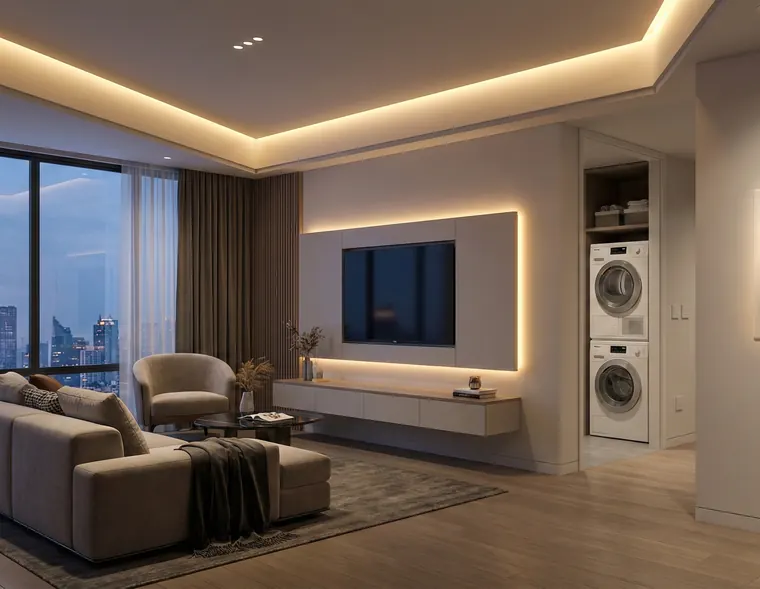
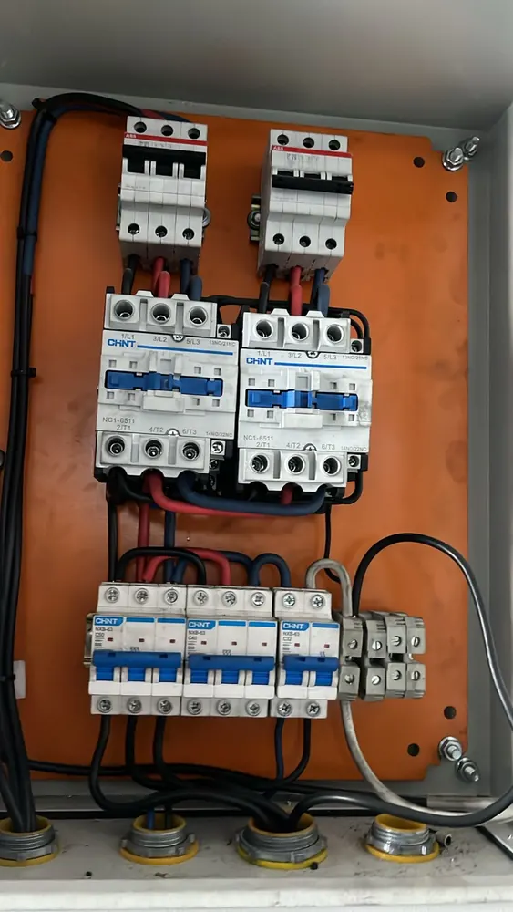

Puntos de Luz y Tomacorrientes
Instalación de interruptores, lámparas LED, dicroicos y tomacorrientes con polo a tierra para viviendas y negocios.
Cotizar por WhatsApp →Servicio técnico electricista a domicilio en José Luis Bustamante y Rivero. Atención puntual y profesional para viviendas, condominios, restaurantes y comercios.
Atendemos con rapidez, orden y puntualidad en todos los sectores del distrito:
Mantenimiento eléctrico para restaurantes, locales y oficinas. Reparación de sobrecargas y luces de emergencia reglamentarias.
Instalaciones residenciales cuidadas, colocación de tomacorrientes con polo a tierra y cambio de llaves térmicas.
Solución de fugas de corriente que elevan el recibo SEAL, balanceo de fases y armado de tableros de distribución.
Trabajos profesionales con garantía y repuestos de marcas líderes (Indeco, Schneider, Bticino):

Instalación de interruptores, lámparas LED, dicroicos y tomacorrientes con polo a tierra para viviendas y negocios.
Cotizar por WhatsApp →
Localización rápida con pinza amperimétrica para solucionar saltos de llaves o recibos de luz excesivos por fugas internas.
Solucionar Falla →
Armado, peinado y actualización de tableros eléctricos con interruptores termomagnéticos y diferenciales certificados.
Revisar Tablero →Sí, atendemos emergencias por apagones o tableros quemados de lunes a sábado las 24 horas, permitiendo que tu negocio no detenga sus operaciones.
Sí, medimos cada circuito con pinza amperimétrica para redistribuir el consumo de forma equilibrada y detectar fugas eléctricas internas.
Atención directa con el electricista técnico. Sin intermediarios, con puntualidad y garantía escrita.
Déjanos tus datos y te contactamos al instante para coordinar tu servicio en José Luis Bustamante y Rivero.